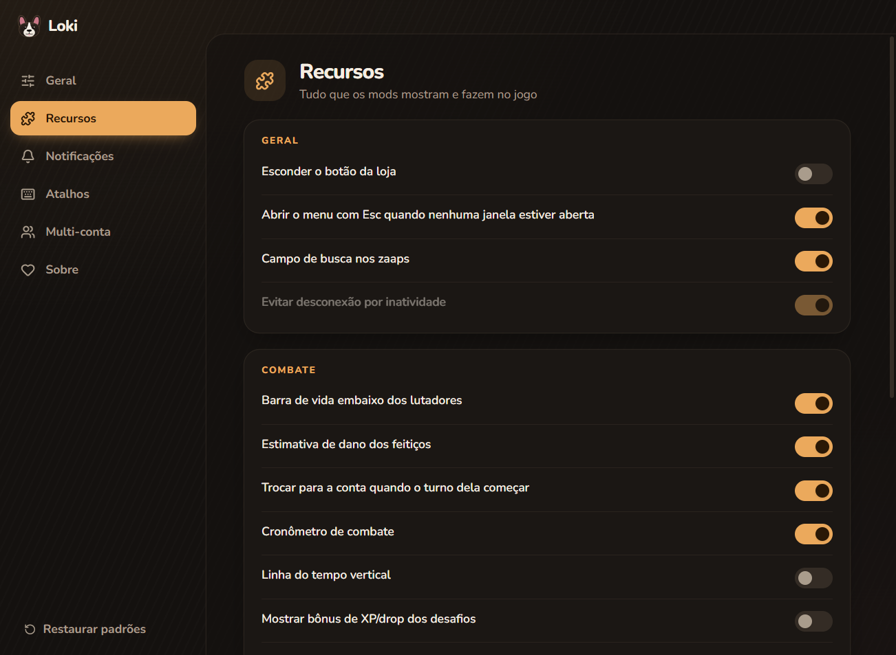
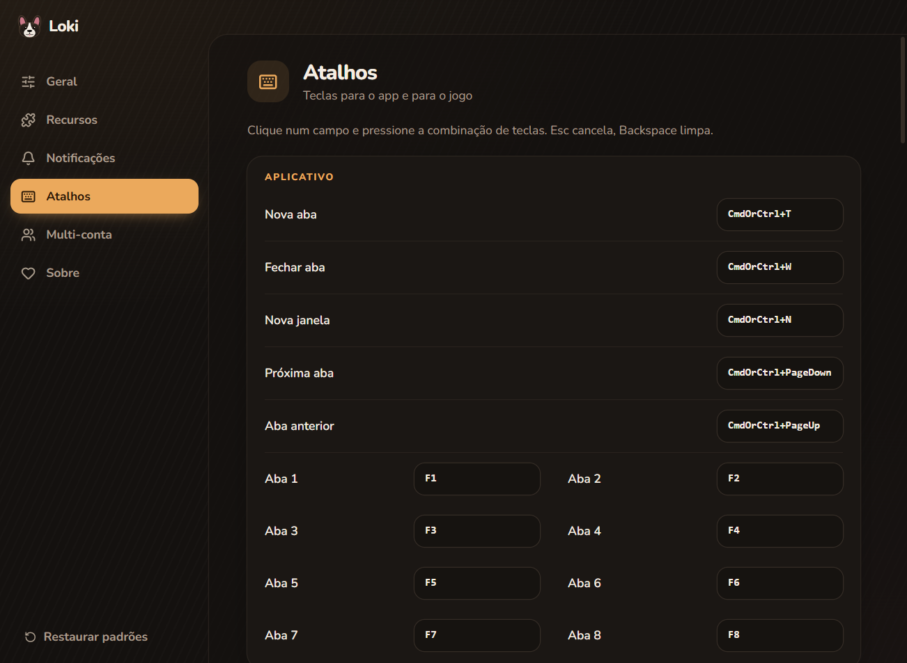
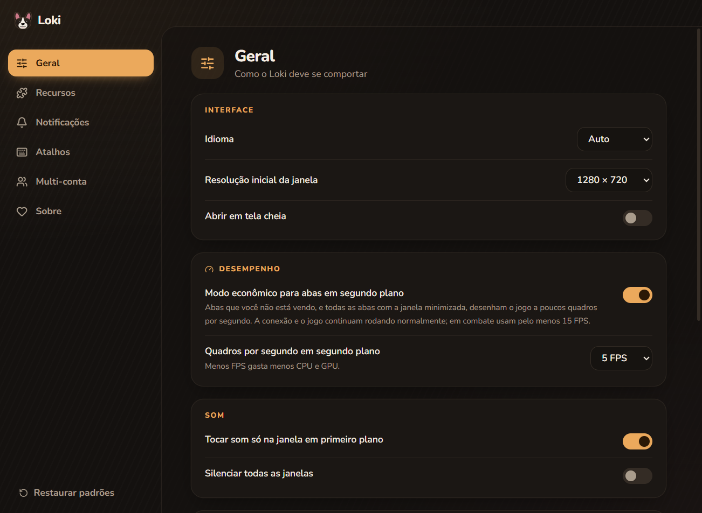

Várias contas em abas
Até 8 contas por janela, com o retrato de cada personagem no dock e aviso quando algo acontece.
O Loki é um cliente para jogar Dofus Touch no Windows: várias contas em abas, atalhos de feitiços, barra de vida no combate, login com Google ou conta Ankama e muito mais.
Feito para quem joga com uma conta ou com a equipe inteira.
Até 8 contas por janela, com o retrato de cada personagem no dock e aviso quando algo acontece.
Feitiços, itens e janelas do jogo no teclado, tudo configurável. Funciona em teclados ABNT e AZERTY.
Barra de vida embaixo dos lutadores, estimativa de dano, cronômetro e linha do tempo vertical.
Multi-conta com cofre criptografado: senha mestra e chaveiro do Windows. Nada sai do seu computador.
Ligado por padrão. O Loki não tem recursos que jogam sozinhos por você.
Abre em cerca de 2 segundos e economiza energia nas abas que você não está olhando.
Opções organizadas, em português, inglês, francês e espanhol.



O Loki é gratuito e sem anúncios. Se ele deixa seu jogo melhor, considere apoiar com qualquer valor pelo Pix: isso ajuda a manter o projeto vivo e atualizado.
66.094.431/0001-72
No app do seu banco, escolha Pix → Pagar com chave e cole a chave.
O app leva o nome do Loki, um bulldog francês preto tigrado com branco que foi muito amado. O rostinho no ícone, as orelhas de morcego e as cores do app são dele. 🐾
Baixe o Loki-Setup, abra e escolha a pasta. O Loki aparece no menu Iniciar. No primeiro uso ele baixa o jogo direto dos servidores da Ankama e você faz login normalmente. Se preferir não instalar, existe a versão portátil na página de downloads.
Isso aparece com programas novos que ainda não têm assinatura digital paga. Clique em Mais informações e depois em Executar assim mesmo.
O Loki não é oficial e não segue os termos de uso do Dofus Touch, então existe risco e a decisão é sua. Para diminuir esse risco, ele não tem recursos que jogam sozinhos por você e vem com o modo seguro ligado.
O login é feito pelo seu navegador, direto na página da Ankama. Se você usar a multi-conta, as senhas ficam num cofre criptografado no seu computador, protegido por uma senha mestra e pelo chaveiro do Windows. O Loki não envia dados para ninguém e não tem telemetria.
Sim. Quando sai uma versão nova, o Loki baixa e instala ao fechar o app.
Por enquanto só para Windows 10 e 11 (64 bits).
O Loki é software livre (GPL-3.0). O código de cada versão vai junto do download, no arquivo Loki-…-source.zip da página de downloads.
Veja as versões em github.com/duduamim/loki-app/releases.